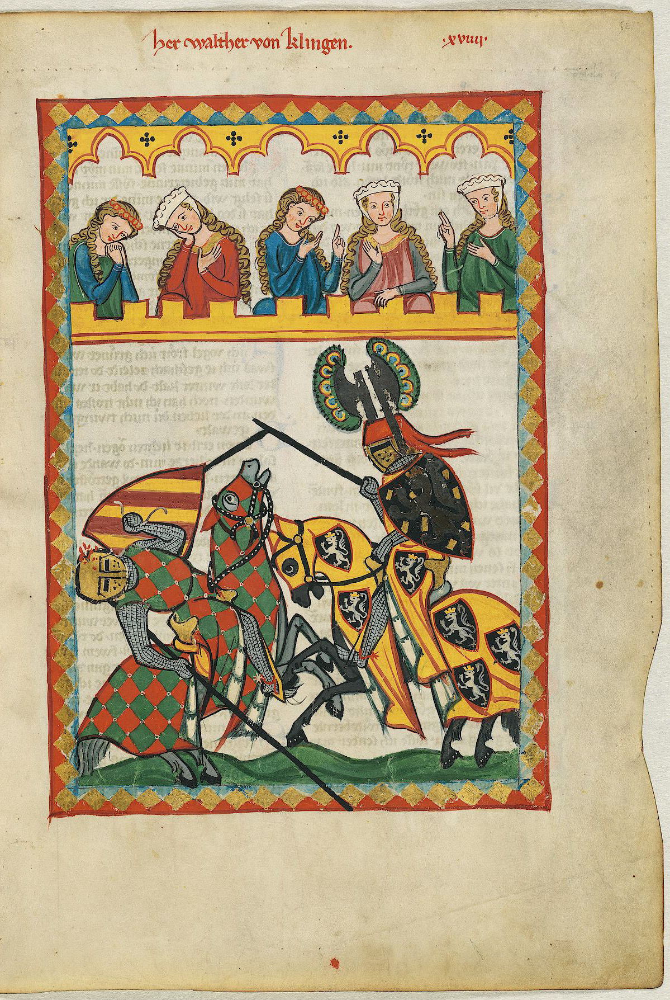

Apollo 16 (April 16–27, 1972) was the tenth crewed mission in the United StatesApollo space program, administered byNASA, and the fifth and next-to-last to land on the moon. The mission was crewed byJohn Young, Commander; Charles Duke, Lunar Module Pilot; and Ken Mattingly,Command Module Pilot. Launched from the Kennedy Space Center in Florida on April 16, 1972 (pictured), Apollo 16 experienced a number of minor glitches en route to the Moon. These culminated with a problem with the spaceship's main engine that resulted in a six-hour delay in the Moon landing. Young and Duke explored the Descartes Highlands , a site thought volcanic, although this proved to be not so. Mattingly orbited the Moon in the command and service module , taking photos and operating scientific instruments. During the return trip to Earth, Mattingly performed a one-hour spacewalk to retrieve several film cassettes from the exterior of the service module. Apollo 16 returned safely to Earth on April 27, 1972. ( Full article... ) Recently featured: 4th Army (Kingdom of Yugoslavia)History of the Nashville SoundsMessiah (Handel) ArchiveBy emailMore featured articles
Did you know... - ... that Minnesang poet Walther von Klingen is depicted jousting (pictured) in the Codex Manesse manuscript?
- ... that in Le Tombeau de Couperin, George Balanchine's ballet to Ravel's orchestral suite, the dancers are divided into two groups, dancing separately?
- ... that Guy Alfred Wyon helped discover a remedy for TNT poisoning in British shell factories in World War I?
- ... that none of the original core Ice Age cast returned for The Ice Age Adventures of Buck Wild?
- ... that the Colonial Office refused to appoint Cyrus Prudhomme David to the magistracy, considering it wrong "as a matter of policy" to appoint a second Black man to a legal post in Trinidad and Tobago?
- ... that Walter Cronkite was one of 40 finalists in NASA's Journalist in Space Project?
- .. that the Selangor State Executive Council degazetted most of the Kuala Langat North Forest Reserve, despite the legislative assembly having unanimously voted to preserve it?
- ... that brewer Sophie de Ronde is allergic to most beer?
- Archive
- Start a new article
- Nominate an article